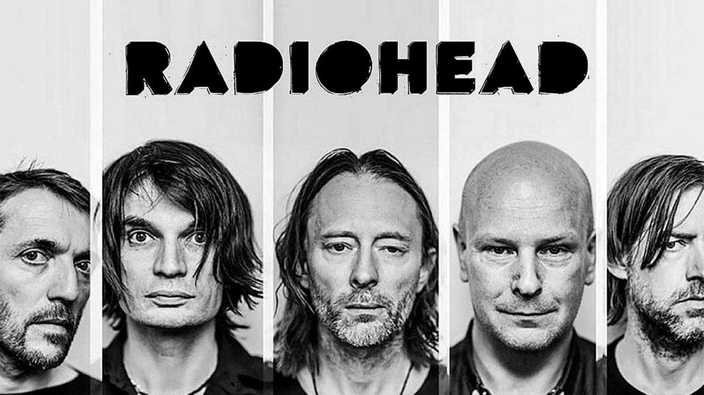
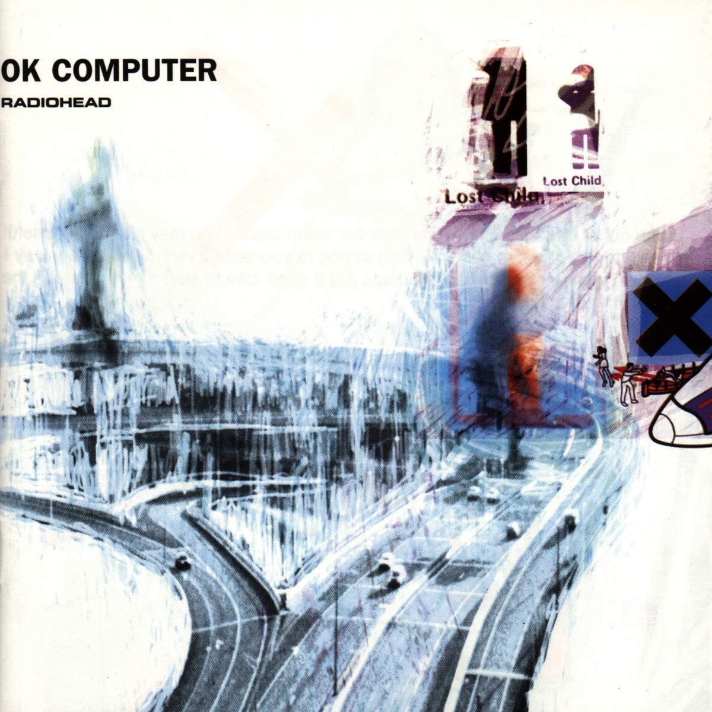

Radiohead

Información
Descripción: Radiohead es una banda británica de rock alternativo originaria de Abingdon-on-Thames, Inglaterra, formada en 1985 inicialmente como una banda de versiones. Está integrada por Thom Yorke (voz, guitarra, piano), Jonny Greenwood (guitarra solista, teclados, otros instrumentos), Ed O'Brien (guitarra, segunda voz), Colin Greenwood (bajo, teclados) y Phil Selway (batería, percusión). Radiohead lanzó su primer sencillo, «Creep», en 1992. Si bien la canción fue en un comienzo un fracaso comercial, se convirtió en un éxito mundial tras el lanzamiento de su álbum debut, Pablo Honey (1993) debido al "boom" comercial del rock alternativo. La popularidad de Radiohead en el Reino Unido aumentó con su segundo álbum, The Bends (1995). El tercero, OK Computer (1997), con un sonido expansivo y temáticas como la alienación y la globalización, les dio fama mundial y ha sido aclamado como un disco histórico de la década de 1990 y uno de los mejores álbumes de todos los tiempos
Discográfia fav
A finales de 1995, Radiohead ya había grabado una canción que estaría presente en su próximo álbum. «Lucky», puesta a la venta como sencillo para promocionar el álbum de caridad de War Child The Help Album, se creó durante una breve sesión con Nigel Godrich, un joven ingeniero de sonido que fue asistente de producción en The Bends y que también produjo uno de sus lados B, «Talk Show Host». La banda decidió producir su nuevo álbum junto a Godrich y comenzaron a trabajar a principios de 1996. Hacia julio, ya habían grabado cuatro canciones en su estudio de ensayos, Canned Applause, cerca de Didcot, Oxfordshire.